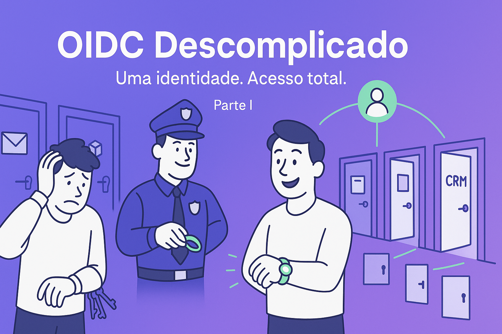
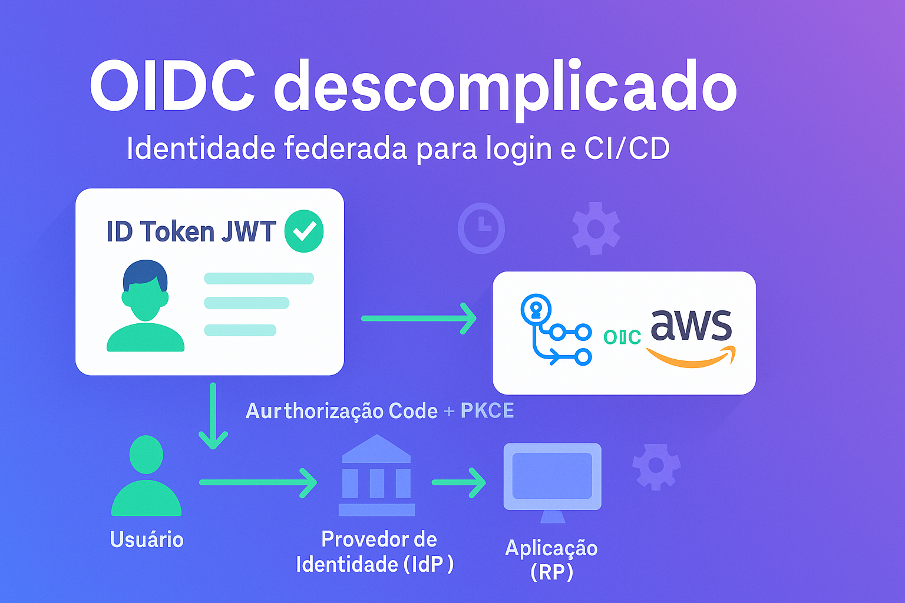

OIDC descomplicado — como acabar com o caos de senhas (Parte I)
Imagine a Secretaria de Serviços de uma cidade média. Cada sistema tem seu próprio login: portal do cidadão, agendamento de consultas, tributos, aplicativos internos das equipes de rua. Em pouco tempo, nasce o caos: senhas repetidas, esquecidas, formulários confusos, redefinições por telefone… e o pior, crescem os riscos de segurança. Foi nesse cenário que o time decidiu alinhar tudo atrás de um único padrão: OIDC.
O OpenID Connect (OIDC) transforma “logins soltos†em uma identidade federada. Em português claro: em vez de cada sistema cuidar de senha, um Provedor de Identidade (IdP) autentica o usuário e entrega um “cartão de identidade†digital (ID Token). Os sistemas (aplicativos web, APIs, apps mobile) confiam nesse cartão, validam a assinatura e liberam acesso de forma consistente.
O que OIDC resolve na prática
OIDC (OpenID Connect) é como ter um "RG digital" que funciona em qualquer lugar da sua organização. Em vez de cada sistema ter sua própria forma de saber quem você é, existe um lugar central que cuida disso.
Analogia do clube social:
Pense num clube que tem piscina, academia, restaurante e salão de jogos. Sem OIDC, você precisaria de um cartão diferente para cada área, com senhas diferentes. Com OIDC, você tem um único cartão do clube que libera tudo — e se você perder acesso ao clube, automaticamente perde acesso a todas as áreas.
Os "personagens" principais:
- Segurança-chefe (Provedor de Identidade): quem te conhece e confirma sua identidade
- Sistemas/apps (seus porteiros): confiam no segurança-chefe e liberam acesso
- Você (usuário): precisa se autenticar uma vez só
Como funciona no dia a dia (sem jargão)
O processo é como ir ao banco:
- Você chega no caixa (acessa o sistema)
- O caixa pede seu documento (sistema redireciona para autenticação)
- Você mostra RG + digital (autentica com senha/biometria no provedor)
- O caixa confirma que é você (sistema recebe confirmação)
- Você pode fazer suas transações (acesso liberado com suas permissões)
BenefÃcios práticos:
- Uma senha só para todos os sistemas
- Se sair da empresa, acesso a tudo é cortado de uma vez
- Autenticação em duas etapas (MFA) protege tudo
- Menos chamados para "esqueci minha senha"
Casos reais onde OIDC salva o dia
Caso 1: ClÃnica médica com 5 sistemas
Antes: recepção, agenda, prontuário, financeiro e laboratório — cada um com login próprio.
Depois: um login só. Médico chega, faz login uma vez, acessa tudo. Saiu da clÃnica? Acesso cortado automaticamente.
Caso 2: Escola com professores, alunos e pais
Antes: portal do aluno, sistema de notas, biblioteca, cantina — senhas perdidas toda semana.
Depois: Google Workspace como provedor. Todo mundo usa a conta Google que já tem, MFA incluso.
Caso 3: Empresa com apps internos e externos
Antes: sistema de ponto, intranet, CRM, e-mail — TI vivia resetando senhas.
Depois: Microsoft 365 como centro. Funcionário sai? Desliga no 365, perde acesso a tudo.
Automações também se beneficiam
Cenário: deploy automatizado sem "senhas fixas"
Quando você tem sistemas que fazem deploy (GitHub Actions, Jenkins), tradicionalmente precisava guardar senhas/chaves fixas no sistema. Com OIDC, em vez de "senha fixa", o sistema de deploy "pede identificação" na hora do deploy e recebe permissão temporária.
Analogia do manobrista:
Antes: você deixava uma cópia da chave do carro (risco se vazasse).
Agora: você dá um "cartão de manobrista" que só funciona por 1 hora, só para estacionar, só naquele local.
Vantagens práticas:
- Sem senhas "esquecidas" em código
- Permissões temporárias e especÃficas
- Auditoria clara: quem fez o quê, quando
Como começar (passos práticos)
1. Escolha seu "segurança-chefe"
- Já usa Google Workspace ou Microsoft 365? Use eles mesmos
- Precisa de algo mais customizável? Keycloak, Auth0, ou AWS Cognito
- Quer simplicidade? Comece com o que já tem
2. Comece pequeno
- Escolha 2–3 sistemas mais usados
- Configure OIDC neles
- Teste com um grupo piloto
- Só depois expanda para tudo
3. Eduque a equipe
- "Agora é um login só para tudo"
- "Se esquecer a senha, reseta em um lugar só"
- "Dupla autenticação (MFA) protege tudo de uma vez"
Glossário (termos que você vai ouvir)
- OIDC: a "tecnologia do login único" que estamos falando
- Provedor de Identidade (IdP): o "segurança-chefe" (Google, Microsoft, etc.)
- Token: a "pulseirinha digital" que prova quem você é
- MFA/2FA: autenticação em duas etapas (senha + celular)
- SSO: Single Sign-On, "login único"
- Claims: as informações sobre você (nome, email, cargo)
Conclusão
OIDC transforma o caos de "mil senhas" na simplicidade de "uma identidade só". É como ter um RG que funciona em qualquer lugar da sua organização — seguro, prático e sem complicação para quem usa.
Os benefÃcios são claros:
- Menos senhas esquecidas e mais produtividade
- Segurança centralizada (MFA protege tudo)
- Onboarding e offboarding mais ágeis
- TI com menos dor de cabeça
Próximo passo → comece pequeno e mexa o que funciona. Se já usa Google Workspace ou Microsoft 365, você tem meio caminho andado.
Quer ver exemplos técnicos, códigos e implementações práticas? Veja a Parte II (Artigo 54) com detalhes para desenvolvedores e administradores de sistema.

Próximo artigo: implementações técnicas com código Python, JavaScript.js e integração CI/CD
A Cara Core Informática pode ajudar na implantação, treinamento e suporte — inclusive aos finais de semana e feriados.
Hashtags
Contato
- E-mail: suporte@caracore.com.br
- Site: www.caracore.com.br
- LinkedIn: Cara Core Informática
Conecte-se conosco no LinkedIn para mais conteúdos sobre desenvolvimento e inovação tecnológica!
Seguir no LinkedIn